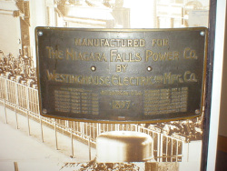
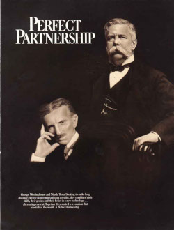
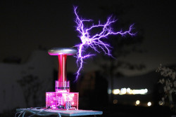
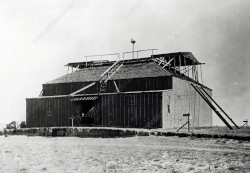
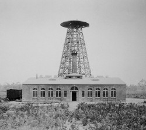
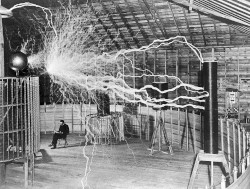

Principais Ações – A cronologia de um gênio visionário 🧠
1882 – O campo magnético giratório
Tesla idealiza o princípio do motor de corrente alternada, baseado no campo magnético rotativo — um conceito que
mudaria para sempre a forma como usamos eletricidade.
1887 – Patentes da Corrente Alternada
Registra suas primeiras patentes relacionadas à corrente alternada (AC), incluindo motores e sistemas de transmissão que
se tornariam padrão no mundo.

1888 – Parceria com Westinghouse
Assina contrato com George Westinghouse para comercializar suas invenções de corrente alternada, desafiando o
sistema de corrente contínua de Thomas Edison.

1891 – A Bobina de Tesla
Desenvolve sua icônica Bobina de Tesla, usada para gerar descargas elétricas em alta voltagem e explorar
transmissão sem fio de energia. Entenda melhor a Bobina de Tesla.

1893 – Feira de Chicago e luz sem fio
Ilumina a Feira Mundial de Chicago com corrente alternada e demonstra lâmpadas acesas sem fios, deixando o
público fascinado com o futuro da eletricidade. Viaje pela Feira de Chicago.
1894 – Raio-X por acidente
Ao realizar experimentos com eletricidade, obtém uma imagem de raio-X semanas antes do anúncio oficial do
cientista
Röntgen — sem saber o que havia descoberto.
1898 – Primeiro controle remoto
Apresenta um barco controlado por ondas de rádio, chamado "telautomato", criando o primeiro dispositivo de
controle remoto da história. Saiba mais sobre o invento do Radio e do Controle Remoto.
1899 – Experimentos em Colorado Springs
Constrói um laboratório em alta altitude e realiza experiências grandiosas com indução sem fio, relâmpagos
artificiais e transmissão de energia sem fios.

1900 – Comunicação extraterrestre?
Acredita ter captado sinais de vida inteligente de outro planeta. Hoje se sabe que Tesla provavelmente captou
transmissões de Marconi, sem saber.
1901 – Início da Torre Wardenclyffe
Começa a construção de uma torre gigantesca para transmitir energia e informação sem fio para o mundo todo — a
maior ambição de sua carreira.(Tesla's Tower).

1906 – A Turbina Tesla
Cria uma turbina inovadora sem pás, mais eficiente que os motores a pistão, e propõe seu uso com energia
geotérmica — ideia muito à frente de seu tempo.
1913 – Patente da turbina
Registra a patente de sua turbina de discos, mas não obtém sucesso comercial. Ainda assim, é estudada até hoje
por engenheiros.
1917 – Previsão dos radares
Descreve o uso de ondas de alta frequência para localizar objetos — antecipando o funcionamento dos radares, que
só seriam inventados anos depois.
1928 – Última patente: avião vertical
Registra sua última patente: um avião com decolagem vertical. Um conceito que seria adotado décadas depois por
forças militares.
1930 – Raio da Morte
Afirma ter criado uma arma de feixe de partículas capaz de destruir frotas inteiras. Nunca comprovada, a
invenção virou lenda. Veja a historia sobre a lenda.

1943 – Reconhecimento póstumo
Meses após sua morte, a Suprema Corte dos EUA reconhece Nikola Tesla como um dos verdadeiros inventores da rádio
— honra que antes fora dada a Marconi.